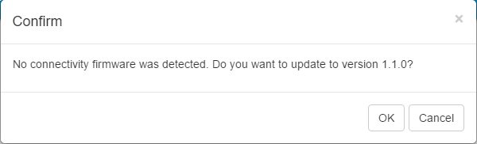
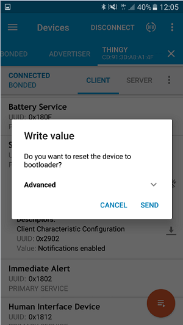
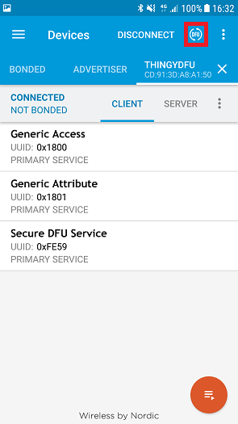

You can run a Device Firmware Update on the Thingy using Nordic Semiconductor's nRF Connect mobile and desktop applications.
Upgrading with nRF Connect for desktop
The following procedure involves using a desktop device and a connectivity board to run a DFU.
Install the following software on your desktop computer before running this procedure:
You will also need either an nRF51 or an nRF52 Development Kit that will function as a connectivity board during DFU. It is recommended to erase this board prior to using it for DFU. To do this, open nRFgo Studio, select the board from the list and click Erase all.

Erasing the connectivity board
- Connect a development kit to your computer through the USB port. This DK will serve as an intermediate connectivity board.
- Run nRF Connect. From the list of ports, choose the serial port where the connectivity board is connected.

Select the board in nRF Connect
- If the board was erased before, a message will appear that no connectivity firmware was detected. Agree to automatically update the connectivity firmware.

Firmware update prompt
- Click Start Scan. From the available discovered devices, connect to
Thingy. Make sure it is not bonded to another host. - Note
- The list of discovered devices is not automatically refreshed when they stop advertising. Whenever you have problems connecting to a device from the list, try clearing it and rerunning the scan. If the Thingy stops advertising, tap or move it.
- Connect to the Thingy. When connecting, you do not need to select any of the optional settings.
- Expand the FE59 service section and enable notifications by clicking Toggle notifications. Then, type
01 into the FE59 field. Press Enter or click Write.
The Thingy now enters DFU mode. You are disconnected from the device and, if you run a new scan, a ThingyDfu device appears in the list of discovered devices. The LED on the Thingy fades in and out rapidly in yellow color. - Note
- The
ThingyDfu device is the Thingy in DFU mode. Notice that its address is always the address of the Thingy plus 1.
- Close nRF Connect. Make sure that nRF Connect and nrfutil applications do not run at the same time.
- With nrfutil installed, open the command prompt and run the following command:
nrfutil dfu ble -ic <ic_series> -pkg <package_name.zip>
NRF51 or NRF52) and <package_name.zip> is the path to the ZIP file that is to be transferred to the Thingy. For example: nrfutil dfu ble -ic NRF51 -pkg "thingy_firmware.zip"
- You might be prompted to select the connectivity serial port. Select the port that the connectivity board is connected to and press Enter. A progress bar will appear showing the progress of the package transfer.
Upgrading with nRF Connect for mobile
The following procedure involves using a mobile device with nRF Connect installed to run a DFU.
Before running this procedure, install nRF Connect for Mobile.
- Transfer the ZIP packages that will be used for DFU to your mobile device.
- Power on the Thingy.
- Open nRF Connect on your mobile device.
- Tap Scan. From the available discovered devices, connect to the Thingy.
- Note
- The list of discovered devices is not automatically refreshed when they stop advertising. Whenever you have problems connecting to a device from the list, try refreshing the list. If the Thingy stops advertising, tap or move the device.
- Expand the Secure DFU Service section. There are two icons to the right of the DFU Control Point area.
- The icon to the right toggles notifications. Make sure they are enabled (the icon must be crossed).
- Tap the icon to the left to put the Thingy into bootloader (DFU) mode. Tap Send when prompted to reset the device to bootloader.

Putting the Thingy into DFU mode (1)

Putting the Thingy into DFU mode (2)
- Note
- The Thingy now enters DFU mode. You are disconnected from the device. The LED on the Thingy fades in and out rapidly in yellow color.
- Go to the Scanner tab and run a new scan. A
ThingyDfu device appears in the list of discovered devices. - Note
- The
ThingyDfu device is the Thingy in DFU mode. Notice that its address is always the address of the Thingy device plus 1.
- Connect to the
ThingyDfu device. Tap the DFU icon.

Running DFU on the ThingyDfu device
- Select Distribution packet (ZIP) and navigate to the ZIP package that you previously uploaded to your mobile device.

Uploading the ZIP file
- The package is now uploaded to the Thingy in the DFU process.

DFU in progress